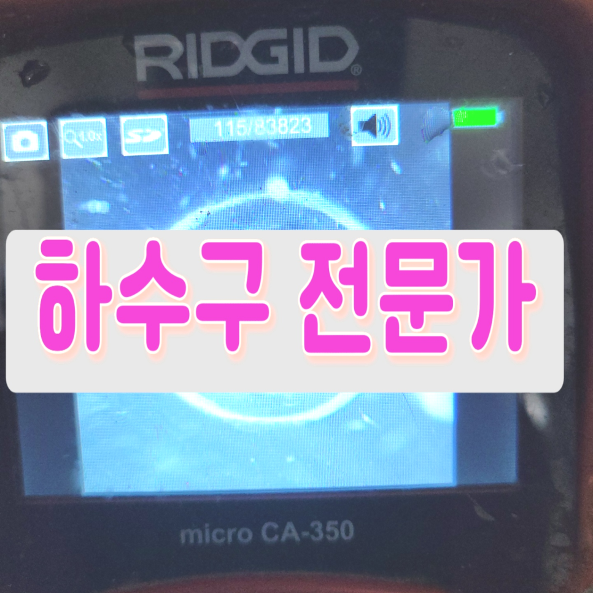
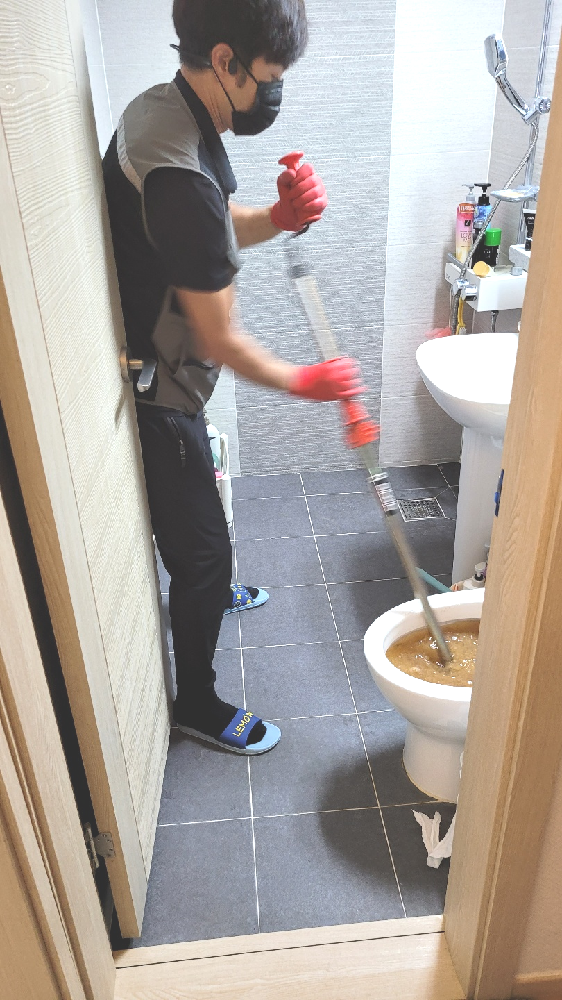
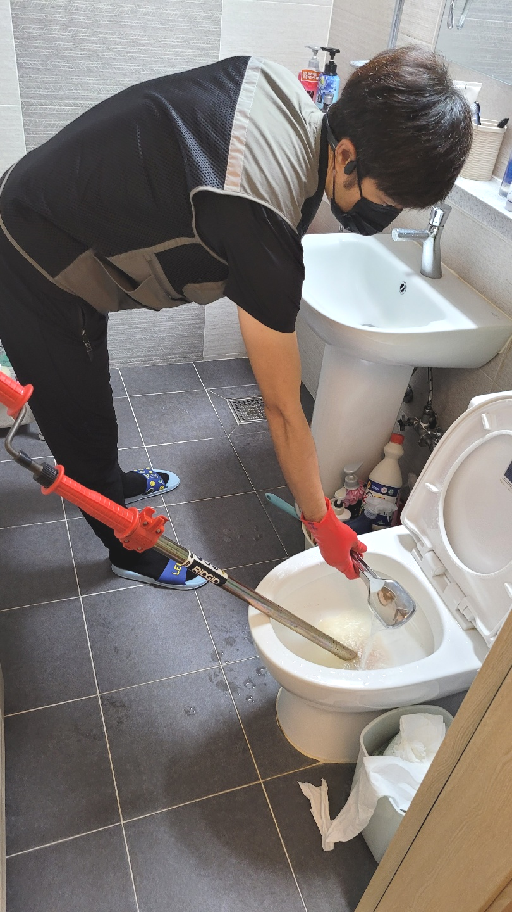
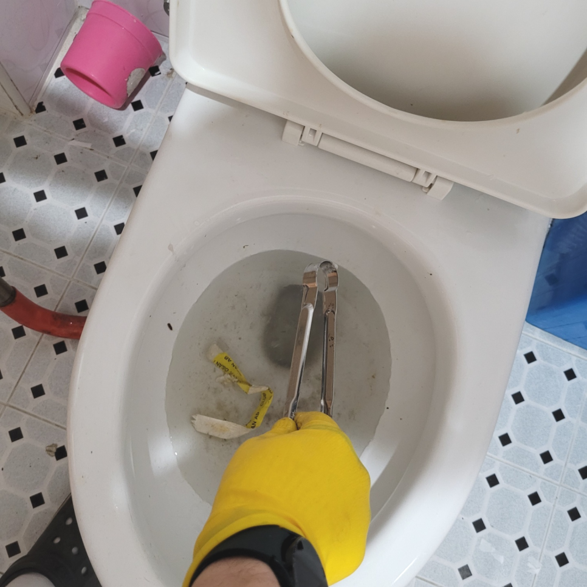
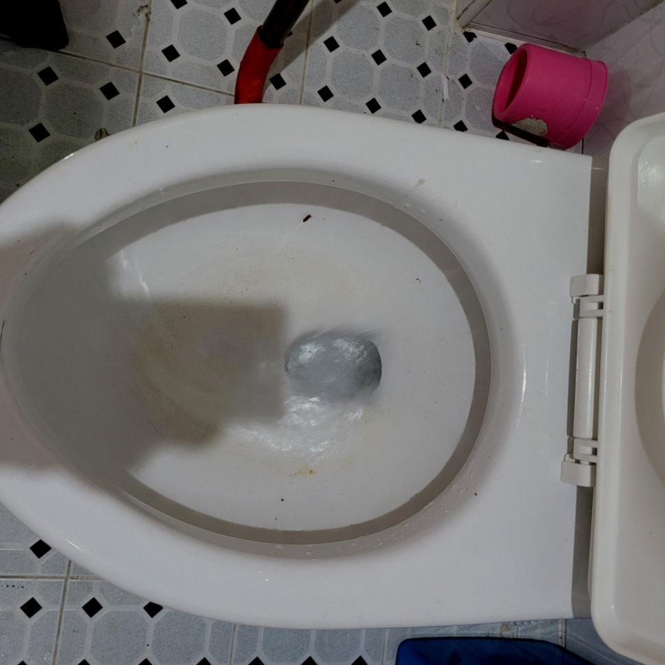
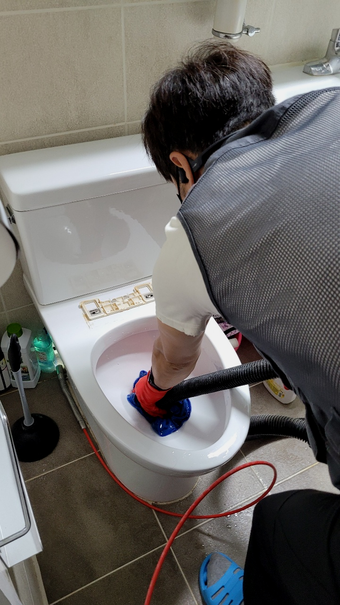
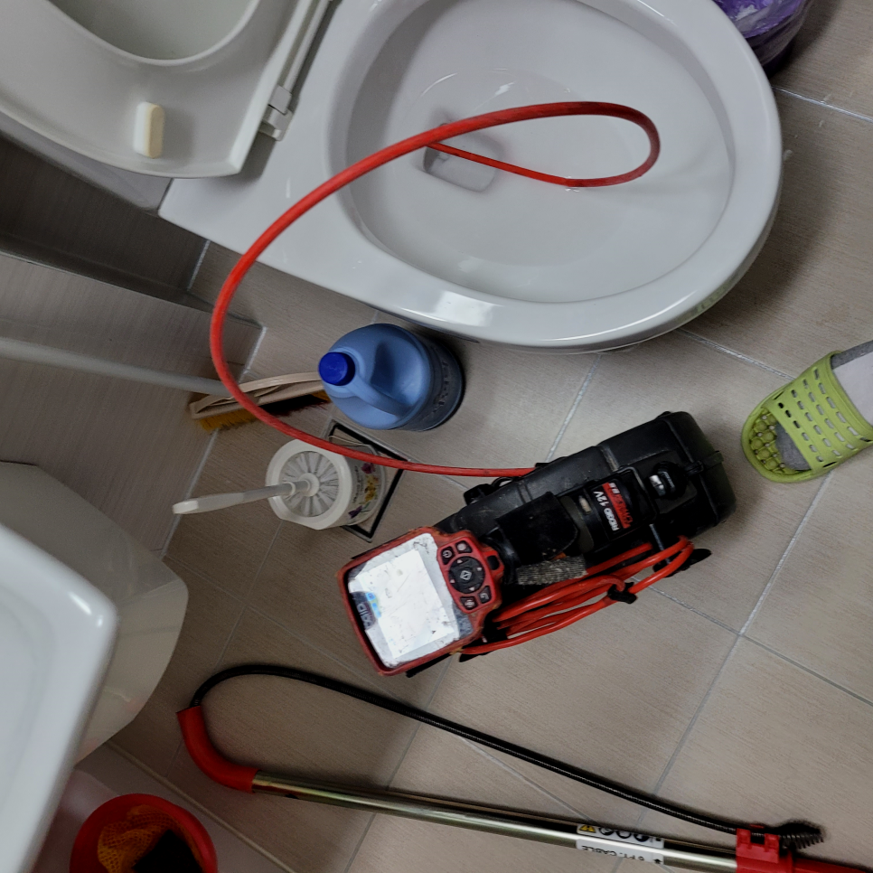

🏠 수지 성복동 대변기막힘 상현동 변기역류 뚫는곳 출장 수리업체
용인 싱크대막힘 전문 시공 후기

📋 작업 개요
- 위치: 용인
- 서비스 유형: 싱크대막힘, 변기막힘, 하수구막힘, 배관막힘, 역류해결, 뚫는업체, 배관청소, 고압세척
- 작업 일시: 2024. 3. 18. 19:43
- 업체명: 하수구수사대 (010-5615-2118)
🔍 문제 상황
어서오세요
설비전문업체 "하수구수사대"를 찾아주셔서 고맙습니다^^
싱크대에서 요리를 하다가 갑작스럽게 물이 안내려가거나 배관 역류되어 셀프로 뚫어 보려했지만 힘만빼고 시간만 버리는 경우도 있답니다.
저희는 배출관내시경 장비를 꺼내서 렌즈 부분을 깨끗하게 닦은 뒤 다시 한번 넣어봤습니다. 화면을 통해보니 배출관배관 속이 보이지 않을 정도로 이물질이 가득 차있었는데요, 먼저 이물질이 가득 쌓인 곳을 중심으로 관로 탐지기로 작업 위치를 탐색해 봤습니다.

🔎 원인 분석
💡 전문가 진단: 수지 성복동 대변기막힘 상현동 변기역류 뚫는곳 출장 수리업체
수지 성복동 대변기막힘 상현동 변기역류 뚫는곳 출장 수리업체
다가구 건물에서의 좁은 배수배관의 경우, 샤프트기를 이용하여 배관 내부의 찌꺼기를 제거하는 것이 중요합니다. 미생물이 번성하여 이물질을 제거하고 배수배관을 철저히 청소해야 합니다. 배수 문제는 놓치게 되면 상황이 악화될 수 있으므로 빠른 대처가 필요합니다.
무엇으로 퇴수구가 막혔는지 찾았다면 본격적으로 뚫음을 시도합니다. 일반적으로 막혔을경우 흡입기계를 활용해 찌꺼기를 끌어올립니다. 완전히 막혀있을시에는 플렉스샤프트를 이용하여 제거해줍니다. 식당퇴수구 혹은 가정집 이외에 야외멘홀 단독주택으로 이뤄진 공간은 수압이 강한 고압세척을 사용합니다.
고객님께도 하수도배관 작업의 상황을 알려드리고 본격적으로 장비 세팅을 하기 시작하였습니다. 배관 스케일링 작업은 단단한 이물질까지도 분쇄를 하면서 제거를 하기 때문에 하수도배관의 본래 내부 모습을 되찾을 수 있도록 하는 것이 장점이라고 할 수 있습니다.
어떤 배수 업체든지 내시경을 갖춘 곳을 이용하셔야 하는 가장 큰 이유랍니다. 관리사무소 같은 곳에서는 이런 기계 없이 도와주시기 때문에 정확하게 막힌 지점을 뚫어낼 수가 없어서 수일 안에 다시 막혀버리는 것입니다.

🔧 작업 과정
물론 스스로도 해결될 때가 대부분이긴 하나, 퇴수배관 막힘 일은 속도전이라고 얘기할 수 있을 만큼 시간이 오래걸릴수록 해결이어려워 될 수 있으면 퇴수전문가의 손길을 빌려 해결하시는 걸 추천합니다. 그리고 나서 확인을 위해 퇴수에 물을 틀어 어느 정도로 막혔는지를 확인해봤는데요.
요즘에는 저희같은 전문업체를 찾기 전, 시중에서 배수구를 뚫거나 청소하는 다양한 약품들을 구입할 수 있어서 셀프로 해결해 보고자 하시는 분들이 많은데요.
이번에 하수 배관 상태를 살펴보니 일부 구간만 막혀있는 것이 아니었습니다. 대부분의 경로에서 이물질이 쌓여서 슬러지를 이루고 있는 것을 확인할 수 있었는데요,
스프링 장비를 사용해 관리 후 하수 흐름이 이전처럼 빠르게 흘러가는 것을 확인할 수 있어요. 막혀 있었던 단면이 완전히 확보되면서 퇴수구배관 유하 속도가 일반적인 배관 속도로 돌아왔습니다. 물이 빠르게 흘러 내려가는 것을 확인하고 내시경 장비로 이물질이 없어진 것도 확인할 수 있었죠.
겉으로 보이는 부분에 이물질이 끼어서 일시적으로 막히는 것이 아닐 경우 일반적인 방법으로는 배수구 문제를 개선하는 것이 어려울 수 있습니다.
그래서 먼저 석션기라는 전문 장비로 석회를 제외한 나머지 이물질들을 먼저 밖으로 꺼내주었는데요, 그러고 나서 하수도 입구를 열어 남은 석회가 있는 곳에 특수약품을 넣고 잠깐 기다려보기로 했습니다.
배수막힘은 물론이고 싱크대막힘, 변기막힘 등의 원인으로 골머리를 앓고 계시다면? 더는 걱정하지 마시고 전문 장비를 보유한 전문적인 배수업체를 꼭 부르시길 바랍니다. 이를 오랜 시간 방치하다가는 잠깐이면 해결될 문제들이 눈덩이처럼 커질 수 있기 때문입니다.
빠르게 달려가겠습니다. 전문 장비가 있다고 좋은 업체라기보다는 배출관전문 장비가 있으면서 그걸 잘 다루는 전문가가 있어야 좋은 업체인데요, 저희는 그간 다양한 현장에서 쌓은 노하우와 실력으로 어느 현장에 더 문제없이 해결이 가능합니다.


✅ 작업 완료
혹시라도 배수관막힘 문제가 발생한 경우 신속한 관리가 가능할 수 있도록 주요 장비를 확보하고있는 저희 업체에게 맡겨서 해결하시길 바랍니다.
#하수구막힘 #하수구뚫음 #하수구역류 #씽크대막힘 #싱크대역류 #오수관막힘 #하수구청소 #욕실하수구막힘 #변기막힘 #하수구뚫는비용 #싱크대수리 #화장실막힘




⚠️ 주방 싱크대 배관 막힘 예방 수칙
- ✅ 기름기가 묻은 식기나 프라이팬은 설거지 전 키친타올로 반드시 기름때를 닦아내세요.
- ✅ 주기적으로 싱크대 개수대에 뜨거운 물을 가득 받아 한 번에 내려 배관 내부 기름을 씻어내세요.
- ✅ 배수구 거름망을 미세한 필터로 사용하시고 음식물 찌꺼기가 틈으로 새어 들지 않게 관리하세요.
- ✅ 베이킹소다와 식초를 뜨거운 물과 함께 일주일에 한 번씩 부어주면 배관 살균과 막힘 예방에 좋습니다.
💡 핵심 정리
- 확실한 장비 작업(내시경 점검 및 샤프트 스케일링)으로 원인을 뿌리 뽑습니다.
- 작업 후 1년 이내에 동일한 부위 재발 시 100% 무상 A/S 서비스를 보장합니다.
- 서울 · 경기 · 인천 전 지역에 24시간 언제든 긴급 출동할 수 있도록 항시 대기 중입니다.
❓ 자주 묻는 질문 (FAQ)
🚨 용인 싱크대막힘 문제로 고민이신가요?
정확한 원인 진단과 확실한 시공으로 재발 없는 해결을 약속드립니다.
24시간 긴급 출동 | 서울 · 경기 · 인천 전지역 | 1년 내 재발 시 무상 A/S